Transform raw charts into clear data stories: master ax.text(), targeted point callouts with ax.annotate(), arrow styles, coordinate transformations (transAxes), mathematical expressions with mathtext, and highlighted danger zones.
Ek graph bina annotations ke sirf numbers aur lines ka ek puzzle hota hai. Reader ko khud dhoondhna padta hai ki peak kahan hai, sudden drop kyu hua, ya critical threshold kahan cross hui.
Samjhein in text components ka core difference:
Dekhiye kaise ek single annotation chart ko guess-work se decision-making asset bana deti hai:
import matplotlib.pyplot as plt
months = ['Jan', 'Feb', 'Mar', 'Apr', 'May', 'Jun', 'Jul', 'Aug']
sales_lakhs = [22, 25, 24, 30, 48, 38, 35, 40]
fig, (ax1, ax2) = plt.subplots(1, 2, figsize=(13, 5), dpi=150)
# 1. Without Annotations (User has to search for peak)
ax1.plot(months, sales_lakhs, color='#64748b', marker='o', linewidth=2.2)
ax1.set_title("[Without Annotations] Raw Plot: Reader Must Guess Insights")
ax1.set_ylabel("Turnover (Lakhs ₹)")
ax1.grid(True, linestyle=':', alpha=0.4)
# 2. With Targeted Annotation and Callout Box
ax2.plot(months, sales_lakhs, color='#0284c7', marker='o', linewidth=2.5)
ax2.annotate(
"Mid-Year Campaign Peak:\n₹48 Lakhs (Record High!)",
xy=(4, 48), xytext=(4.3, 52),
arrowprops=dict(facecolor='#dc2626', shrink=0.08, width=1.5, headwidth=7),
fontsize=9, fontweight='bold', color='#991b1b',
bbox=dict(boxstyle='round,pad=0.4', facecolor='#fef2f2', edgecolor='#f87171')
)
ax2.set_title("[With Annotations] Storytelling: Instant Clarity & Focus")
ax2.set_ylabel("Turnover (Lakhs ₹)")
ax2.set_ylim(15, 60)
ax2.grid(True, linestyle='--', alpha=0.45)
fig.tight_layout()
plt.show()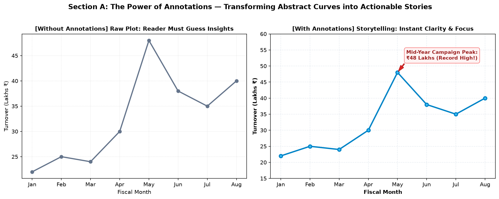
Figure 13.1: Left plot leaves the viewer searching for context. Right plot immediately focuses the eye on May's record-breaking campaign peak.
Title aur labels graph ke primary compass hain. Do universal rules hamesha follow karein:
"Temperature" ya "Revenue" na likhein. Hamesha likhein: "Chamber Temperature (°C)" ya "Turnover (Lakhs ₹)".ax.set_title() hota hai, aur poore multi-panel dashboard ka master title fig.suptitle() se banta hai.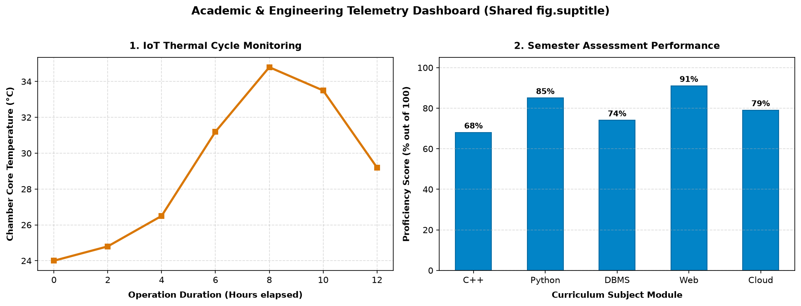
Figure 13.2: Multi-panel telemetry dashboard. Shared fig.suptitle at the top, clear individual subplot titles, and explicit units (°C, % out of 100) on axes.
Agar aapko kisi particular data point par arrow point nahi karna, balki graph ke andar ek floating label, mean baseline text, ya target note display karna hai, toh ax.text(x, y, "message") use hota hai:
| Parameter | Common Values | Purpose & Visual Effect |
|---|---|---|
x, y |
Floats (Data values) | Coordinates jahan text ka anchor point position hoga. |
ha |
'left', 'center', 'right' |
Horizontal alignment relative to coordinate point. |
va |
'top', 'center', 'bottom' |
Vertical alignment relative to coordinate point. |
rotation |
Degrees (e.g. 45, 90) |
Slanted ya vertical text print karne ke liye. |
bbox |
Dictionary (e.g. dict(boxstyle='round', facecolor='#fee2e2')) |
Text ke peeche background callout badge draw karna. |
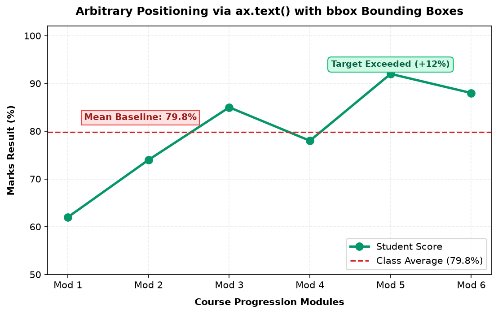
Figure 13.3: Arbitrary placement using ax.text(). Notice the dashed red mean baseline label and the green "Target Exceeded (+12%)" rounded badge.
ax.annotate() Matplotlib ka sabse versatile function hai. Isme do distinct coordinate points hote hain jinko beginners aksar mix-up kar dete hain:
xy=(x, y): Wo point jisko arrow point kar raha hai (The actual target data point).xytext=(x, y): Wo location jahan text callout box print hoga (The label position).# The Anatomy of a Perfect Annotation
ax.annotate(
"Viral Feature Launch Spike!\nVisitors: 58,000",
xy=(5, 58), # Target data point: Week 5, 58K users
xytext=(5.6, 52), # Text position offset away from point
arrowprops=dict(
facecolor='#0284c7',
edgecolor='#0369a1',
width=1.5,
headwidth=8,
shrink=0.08
),
fontsize=9.5, fontweight='bold', color='#0c4a6e',
bbox=dict(boxstyle='round4,pad=0.5', facecolor='#e0f2fe', edgecolor='#38bdf8')
)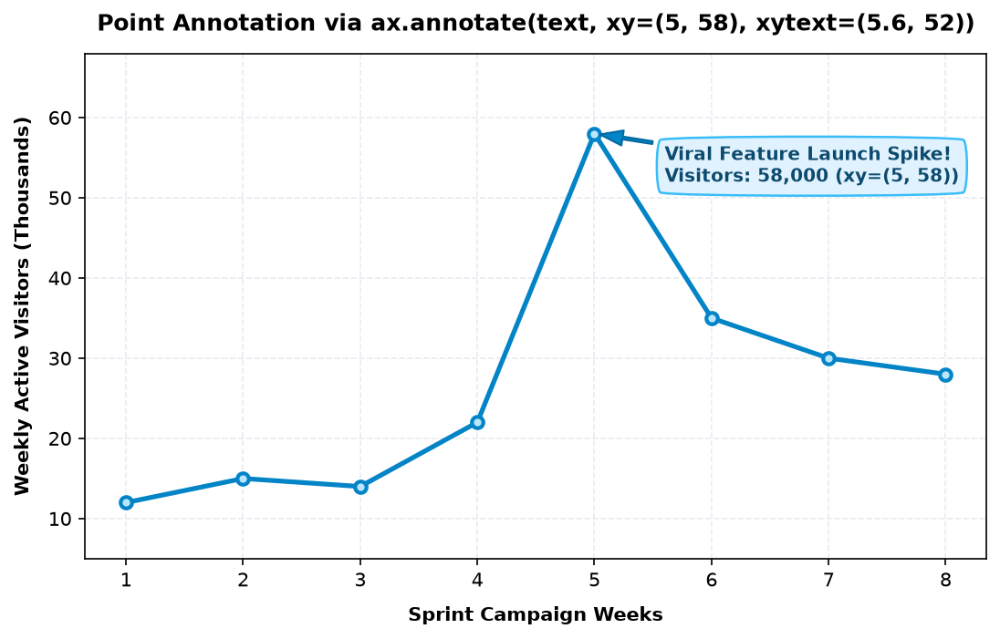
Figure 13.4: Target point xy=(5, 58) highlighted with arrow originating from offset label box xytext=(5.6, 52).
arrowprops dictionary ke zariye aap arrow ke path aur pointer head ko tailor-made configure kar sakte hain:
| Configuration | Code Example | Visual Result |
|---|---|---|
| Standard Straight Arrow | arrowstyle='->', lw=1.5 |
Clean, minimalist direct arrow. |
| Filled Triangle Pointer | arrowstyle='-|>', lw=1.8 |
Solid filled arrow head for high emphasis. |
| Curved Connection | connectionstyle='arc3,rad=0.3' |
Smooth curved arc avoiding intermediate data lines. |
| Right-Angle Elbow | connectionstyle='angle,angleA=0,angleB=90,rad=5' |
Circuit-board style orthogonal elbow connector. |
| Target Gap (Shrink) | shrinkB=8 |
Arrow head aur data point ke beech 8 points ka clean gap chhodta hai. |
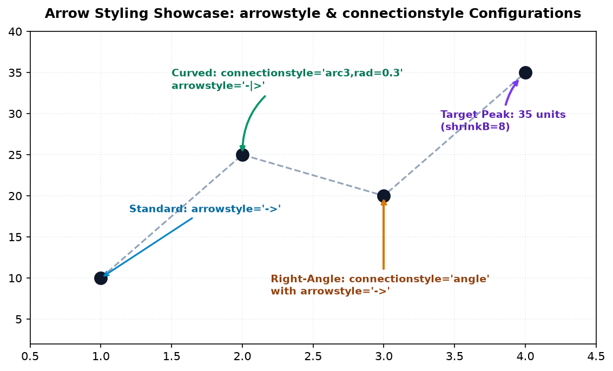
Figure 13.5: Showcase of arrow configurations: standard '->', curved 'arc3,rad=0.3', orthogonal right-angle 'angle', and shrink padding.
Aksar students jab graph ka viewing range (limits) change karte hain, toh unka status label screen se bahar gayab ho jata hai! Kyu? Kyunki unhone text ko Data Coordinates mein place kiya tha.
(0, 0) bottom-left corner hota hai, aur (1, 1) top-right corner hota hai, chahe data range kuch bhi ho! Agar aapko "System Normal" ya watermark lagana hai jo hamesha top-right corner par fix rahe, toh transform=ax.transAxes use karein:
# Fixed to the top-right corner regardless of data limits!
ax.text(
0.98, 0.95,
"SYSTEM HEALTH: OPTIMAL\nEngine: Node-04",
transform=ax.transAxes,
fontsize=9, fontweight='bold', color='#065f46',
ha='right', va='top',
bbox=dict(boxstyle='square,pad=0.5', facecolor='#ecfdf5', edgecolor='#10b981')
)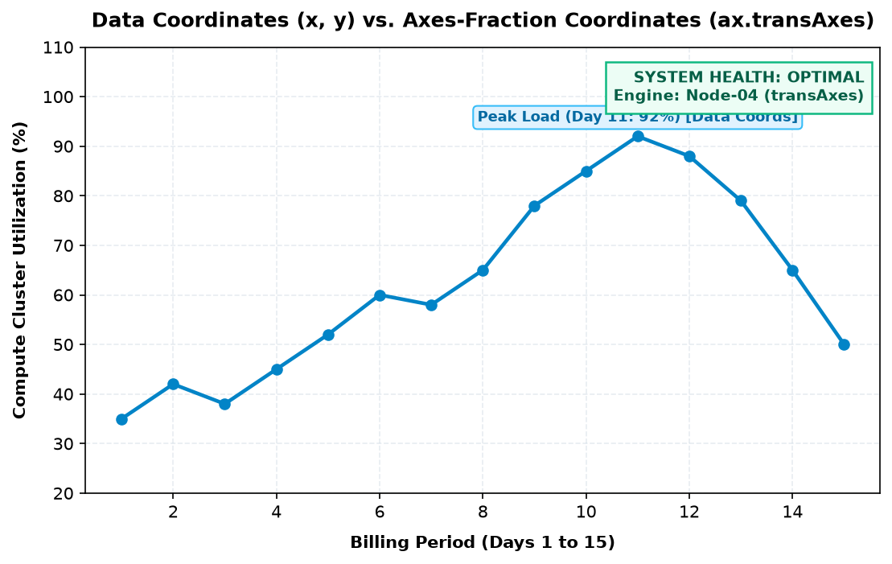
Figure 13.6: Comparison: Peak load label uses data coordinates (Day 11, 92%). The top-right System Health badge uses ax.transAxes (0.98, 0.95) and stays anchored even if data ranges shift.
Scientific, machine learning aur statistical charts mein mathematical formulas (e.g. μ, σ, R2, α) display karne ke liye aapko external LaTeX install karne ki zaroorat nahi hai. Matplotlib built-in Mathtext engine provide karta hai—sirf text ko raw dollar signs (r"$...$") mein wrap karein:
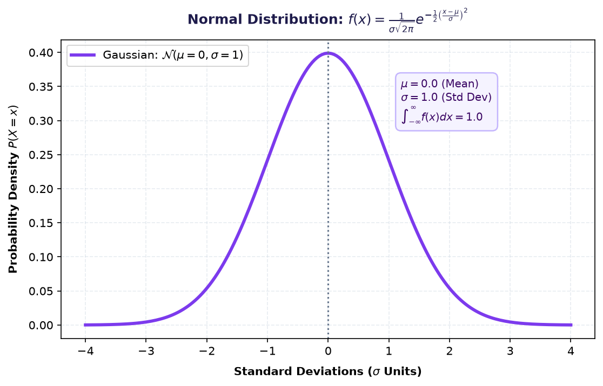
Figure 13.7: Gaussian distribution plotted with native Mathtext formulas in the title, axis labels, and callout box (f(x), \mu, \sigma, and integral limits).
Single point ke bajaye jab poora range highlight karna ho—jaise "Unsafe Temperature Zone" ya "Festive Overclock Interval"—tab hum Span methods use karte hain:
ax.axhline(y, ...): Poore plot par horizontal benchmark line draw karta hai.ax.axvline(x, ...): Vertical timestamp line draw karta hai.ax.axhspan(ymin, ymax, ...): Horizontal shaded band create karta hai (e.g. danger zone above 35°C).ax.axvspan(xmin, xmax, ...): Vertical shaded interval create karta hai (e.g. Days 8 to 11).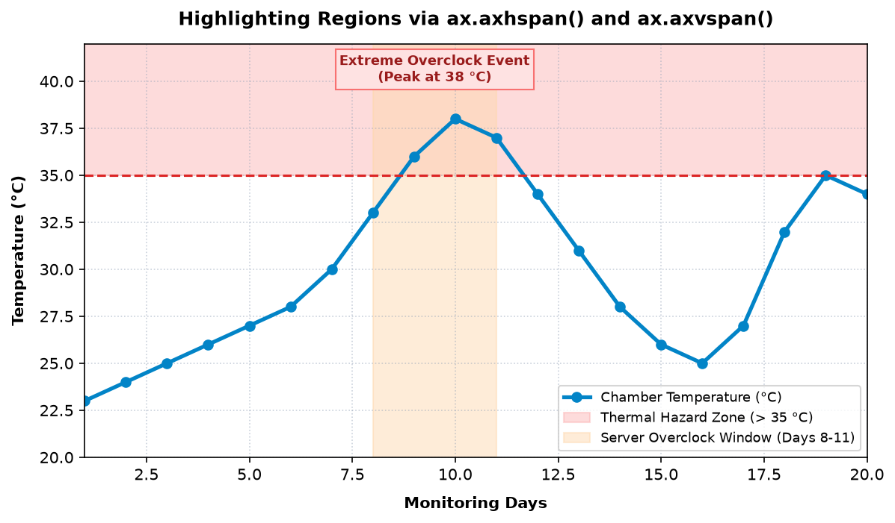
Figure 13.8: Combined region highlights: Horizontal red hazard zone (> 35°C) via ax.axhspan(), and vertical orange overclock window (Days 8-11) via ax.axvspan().
Modern Matplotlib mein bars ke upar exact numerical values print karne ke liye manual loops ki zaroorat nahi hai. Standard method hai ax.bar_label():
# 1. Vertical Bars
bars = ax.bar(categories, values, color='#0284c7')
ax.bar_label(bars, padding=3, fmt='%d', fontweight='bold')
# 2. Horizontal Bars
bars_h = ax.barh(categories, values, color='#059669')
ax.bar_label(bars_h, padding=5, fmt='%d students', fontweight='bold')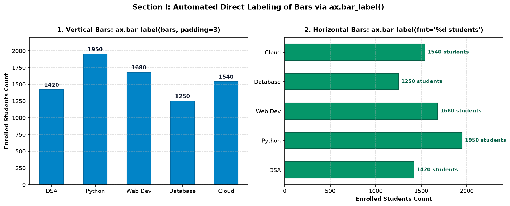
Figure 13.9: Left: vertical bars labeled directly above peaks with padding=3. Right: horizontal bars formatted with custom string templates ('%d students').
Scatter plot mein agar aap har point par label chipkayenge, toh poora graph text clutter ban jayega. Professional technique hai: sirf interesting outliers ya target observations ko spotlight karein:
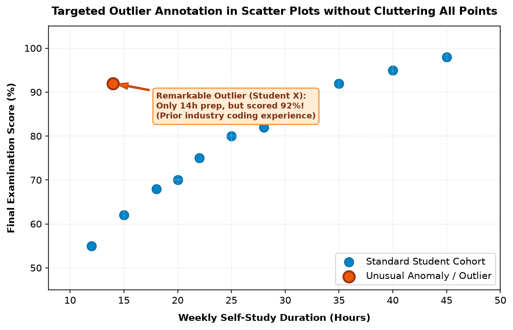
Figure 13.10: Scatter plot of study hours vs exam marks. Standard cohort points remain clean, while the remarkable outlier (Student X: 14h prep, 92% marks) is spotlighted with an arrow and narrative callout.
Enterprise dashboards mein multiple panels coordinate hote hain:
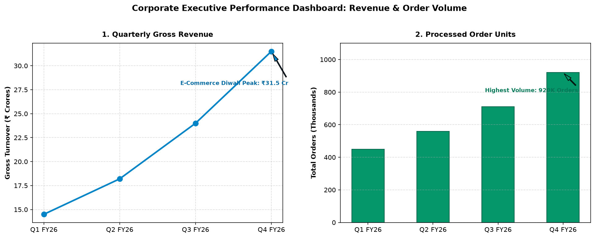
Figure 13.11: Dual-panel executive dashboard: Subplot 1 highlights Diwali revenue peak (₹31.5 Cr), while Subplot 2 highlights processed order volume (920K units).
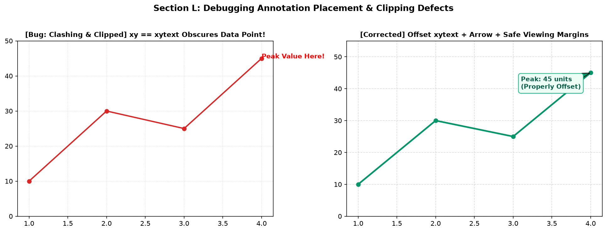
Figure 13.12: Left: setting xy == xytext directly places text over the data point and clips it against the top boundary. Right: properly offsetting xytext with an arrow and expanding Y-limits ensures 100% readability.
Mistake: Text ko usi point par likh dena jahan marker hai.
Fix: Hamesha offset coordinates dein (e.g. xytext=(x+0.5, y+5)).
Mistake: Annotation text chart canvas ke edge se bahar cut jana.
Fix: Expand limits: ax.set_ylim(0, max_y * 1.2).
Mistake: xy aur xytext ke coordinates swap ho jana.
Fix: Remember: xy is the target; xytext is the box.
Mistake: Status text data coordinates me likhna jo limits change hote hi gayab ho jaye.
Fix: Use transform=ax.transAxes for fixed corner badges.
Scenario: 5 semester subjects ka score analysis, jisme Star performance (Database: 94%) aur Remedial area (OS: 68%) dono ko explicit arrows se highlight kiya gaya hai sath me class average line ke sath:
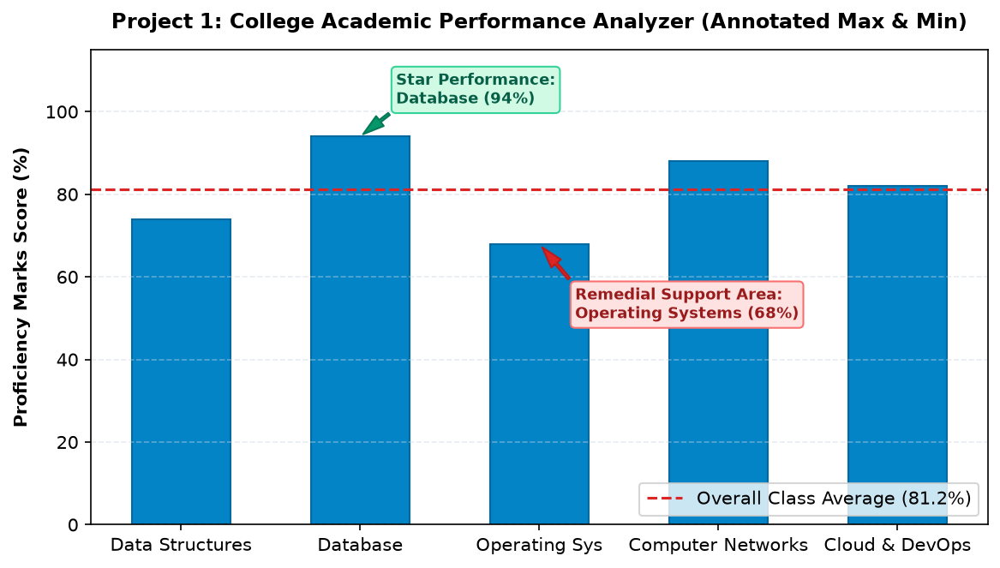
Figure 13.13: Project 1 Dashboard. Star subject and remedial subject callouts with class average baseline.
Scenario: H2 FY26 revenue trajectory with target benchmark (₹60L) and festive surge peak callout:
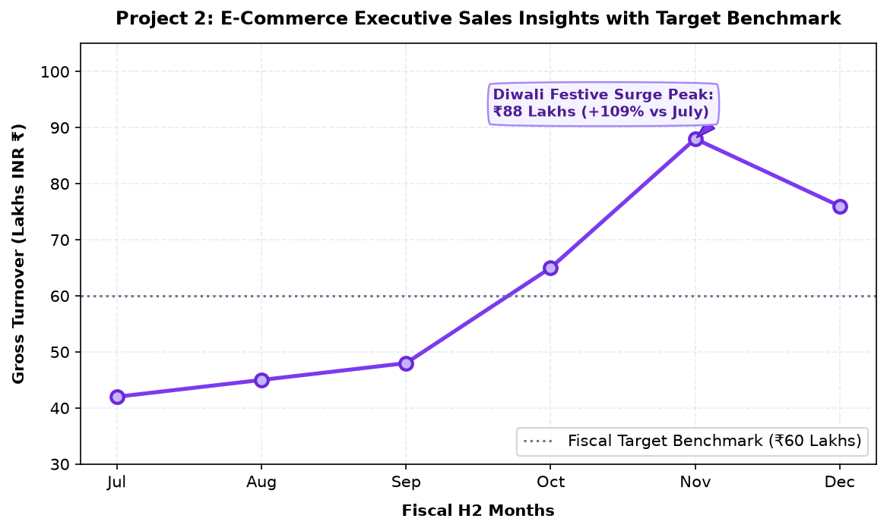
Figure 13.14: Project 2 Dashboard. Diwali festive surge peak (₹88 Lakhs) highlighted with purple callout and benchmark line.
Scenario: Chamber temperature monitoring with cooling fan failure spike annotated, critical danger zone (>35°C), and anchored transAxes status box:
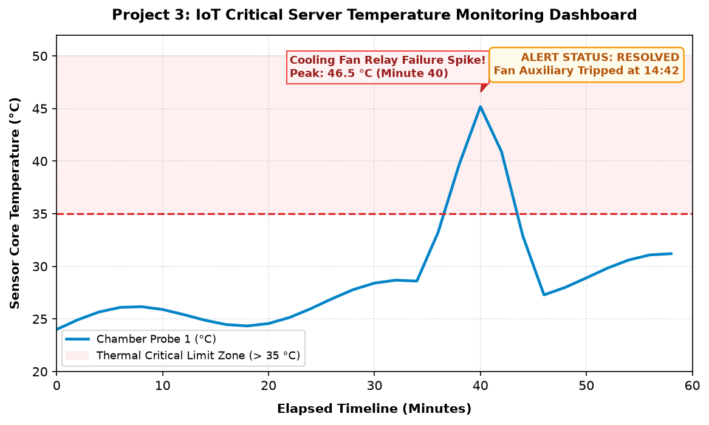
Figure 13.15: Project 3 Dashboard. Spike callout at 46.5°C, danger zone axhspan, and permanently anchored system status banner.
| Method | Key Arguments | Code Snippet |
|---|---|---|
ax.text() |
x, y, s, ha, va, bbox, transform |
ax.text(2, 50, "Note", bbox=dict(facecolor='white')) |
ax.annotate() |
text, xy, xytext, arrowprops, bbox |
ax.annotate("Peak", xy=(4, 90), xytext=(4.5, 95), arrowprops=dict(facecolor='red')) |
ax.axhline() |
y, color, linestyle, linewidth |
ax.axhline(75, color='red', linestyle='--') |
ax.axhspan() |
ymin, ymax, color, alpha |
ax.axhspan(35, 50, color='red', alpha=0.3) |
ax.bar_label() |
container, padding, fmt |
ax.bar_label(bars, padding=3, fmt='%d') |
ax.annotate() me xy argument kya represent karta hai?xy aur xytext dono ko identical coordinates de dein, toh kya hoga?min(data) and pass to ax.annotate(..., xy=(min_x, min_y)).ax.bar_label(bars, fmt='%d%%').ax.text(0.02, 0.95, "Timestamp: ...", transform=ax.transAxes).ax.axhspan(30, 40, color='green', alpha=0.25).ax.annotate() with connectionstyle='arc3,rad=0.2'.Annotations aur visual storytelling master karne ke baad Matplotlib ka sabse visually powerful aspect shuru hota hai: Subplots & Complex Layouts!
Matplotlib Topic 14: Subplots & Layouts mein aap seekhenge:
plt.subplot() vs plt.subplots() vs GridSpec ka complete comparison.tight_layout() calibration!